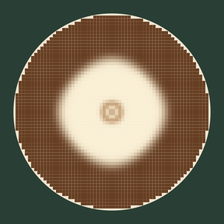
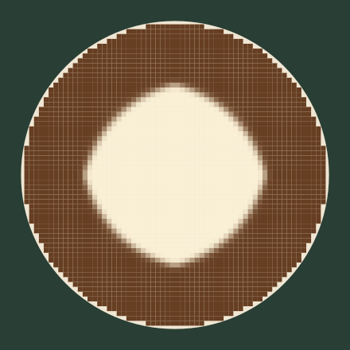
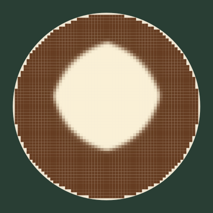
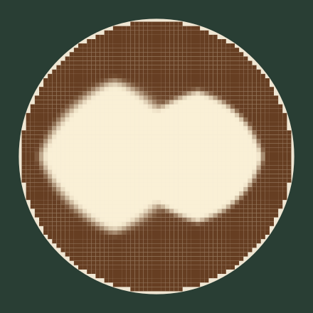
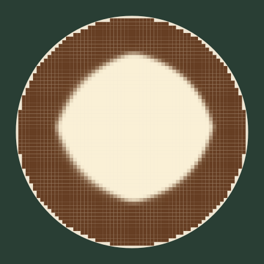
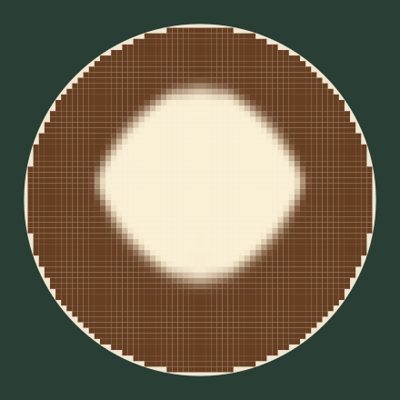
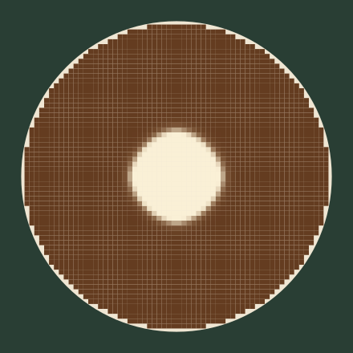
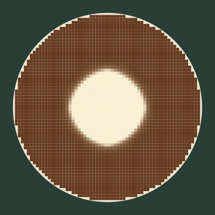
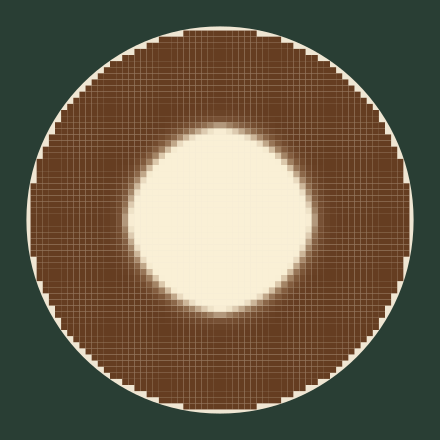
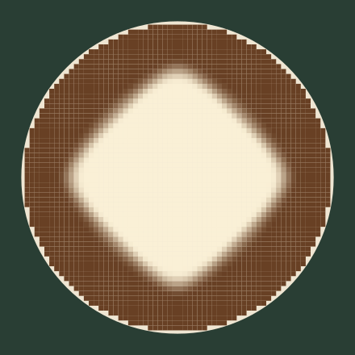
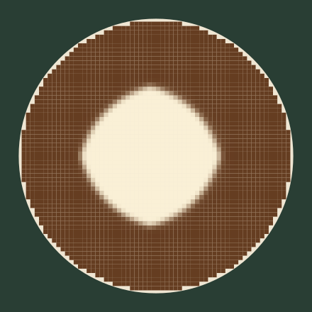
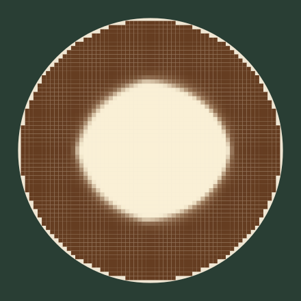
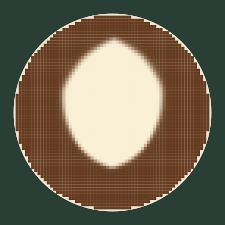
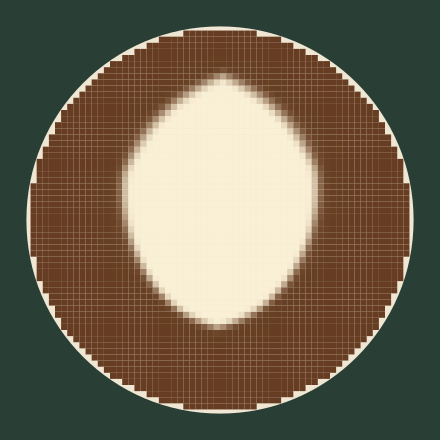
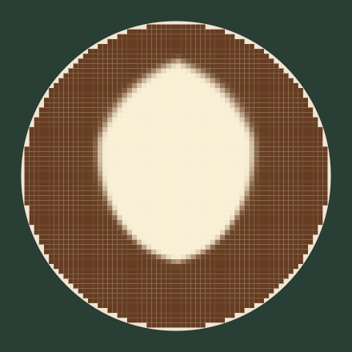
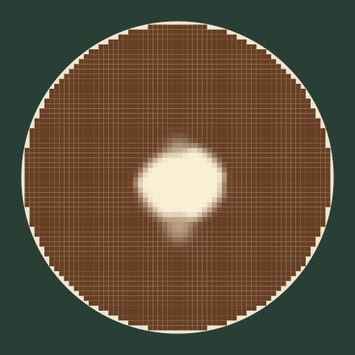
Images reconstructed directly from transported milk/foam/crema inventories. No target shapes. These field captures are separate from browser screenshots.
Preserved rigid-lid baseline · Quantitative results















